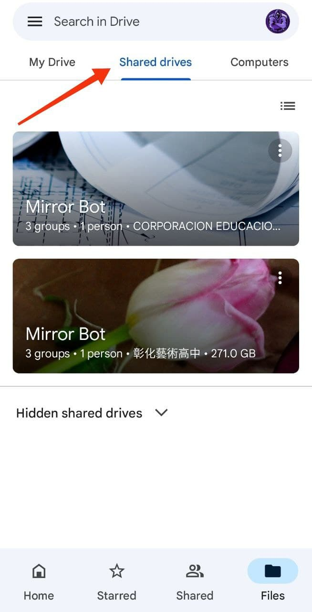
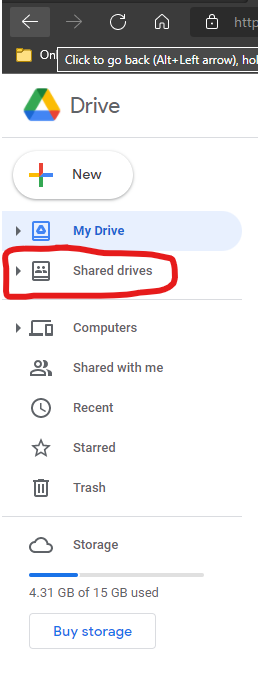

Mirror Bot Access 🔐
Lets get your Access to Mirror-Bot’s Cloud to easily access your requested Files from Google Drive Itself.😊
⚙️ How to Get ?
1.First you have to join our Mirror Bot's Google Group! Join Now!
2.To Join the Group just click the above given button "Join Now!" and click Join button on Google Group's Site.
3.After you join the Group, you will automatically get your access.
🗳️ Use Google Drive to access!
1.After you joined the group! Now Go to "Google Drive" app for Android or IOS.
2.Or you can use Website to access Shared Drive on your PC or Laptop.
3.Now if you are using App, then Refresh it and click Shared Drive Tab Button as shown in the Image.

4.Or, If you are using Website from PC or Laptop, then click Shared Drive from Sub Menu.
